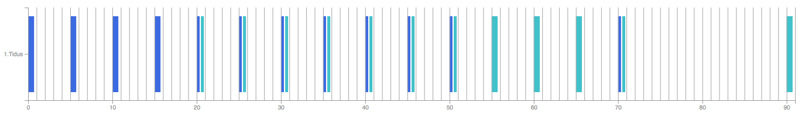
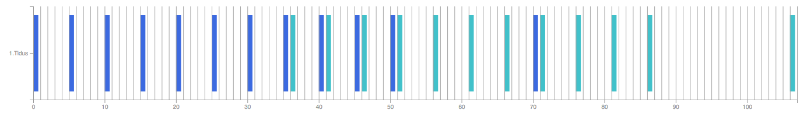
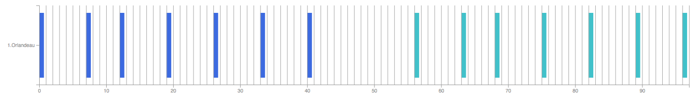
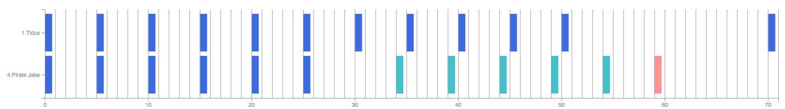

<div class="row" >
  <div class="how-to" #HowToDiv>
    <h1 class="title">{{ 'how-to.title' | translate }}</h1>

    <ngx-md *ngIf="lang != 'fr'">
### Chains<br/>
#### How does the game work ?<br/>
The first thing you should know when starting to play with chain, is that the game run on 60 frames per second<br/>
This is important because hits of abilities hit each X frames and not in seconds or milliseconds<br/>
But we can easily find that 1 frame = 16.66 milliseconds<br/>
<br/>
#### What is a chain ?<br/>
It's when 2 units, or more, hit the target whit alternating hits<br/>
Here a small exemple: The first unit will hit first, then the second unit hit, next the first unit hit again, then the second one, etc...<br/>
When you see in game "Combo", it's that you are already in a chain :)<br/>
<br/>
#### Why chaining is important ?<br/>
Because it's nice to see high combo ^^<br/>
No I'm kidding, it's important because at each combo the power of the hits increase by a certain rate up to 400%<br/>
<br/>
Here is the detail of the modifications<br/>
 - Neutral combo : 10%<br/>
 - Elemental combo : 20% by elements<br/>
 - Spark combo : 30% (only one every two hits)<br/>
<br/>
Knowing that each of thoses combo can be combined, if you do a spark fire/water combo so the power gain 80% in one hit<br/>
You can find bellow a table which show the number of hit necessary to reach the maximum power<br/>
    </ngx-md>

    <ngx-md *ngIf="lang == 'fr'">
### Les chaines<br/>
#### Comment fonctionne le jeu ?<br/>
La première chose à savoir quand on veut faire les chaines, c'est que le jeux tourne en 60 frames par seconde<br/>
Ceci est important car les coups des différents sorts frappent tout les X frames et non pas des secondes ou des millisecondes<br/>
Cependant via un calcul assez simple on sait qu'1 frame = 16.66 milliseconds<br/>
<br/>
#### Qu'est-ce-qu'une chaine exactement ?<br/>
C'est quand 2 unités, ou plus, vont frapper la cible avec des coups de façon alternée<br/>
Pour rentrer un peu plus dans les détails avec un petit exemple<br/>
L'unité 1 va taper en premier la cible, puis ensuite l'unité 2, l'unité 1 va ensuite re-taper, puis l'unité 2, etc...<br/>
En jeu globalement à chaque fois que vous voyer marquer "Combo", c'est que vous etes en train de faire une chaine :)<br/>
<br/>
#### Pourquoi faire des chaines ?<br/>
Parce qu'on veut voir de gros chiffres ^^<br/>
Non, concrètement à chaque combo la puissance des coups augmente et ce jusqu'à X4<br/>
<br/>
Voici le détail des modifications<br/>
 - Combo neutre : 10%<br/>
 - Combo élémentaire : 20% par éléments<br/>
 - Combo étincelle : 30% (seulement un coup sur deux)<br/>
<br/>
Sachant que chacun de ces combos sont cumulables, du coup un combo feu + eau en étincelles fait grimpé la puissance de 80% d'un seul coup<br/>
Voici donc un tableau qui récapitule le nombre de coup nécessaire pour atteindre la modification maximal de X4<br/>
    </ngx-md>

    

    <ngx-md *ngIf="lang != 'fr'">
#### What is a spark ?<br/>
A spark combo is when 2 units hit on the same frame, be careful only 1 of the 2 hit is concidered as a spark<br/>
<br/>
#### Break a chain<br/>
There is 2 way to break a chain<br/>
 - An unit hit twice in a row<br/>
 - If there is more than 21 frames between 2 hits<br/>
<br/>
When a chain is break, we start again at 0 combo and the power drop to 100%<br/>
<br/>
#### Add a finisher in a chain<br/>
At any moment you can add another unit in a chain to take advantage of the rise of power<br/>
It become interested to use some finisher, units who have abilities which do only one hit<br/>
With those spells, all their power is rise with one hit, moreover those abilities are more powerfull than the chain skills generally<br/>
So we need to try to include them as soon as the power is at 400%<br/>
<br/>
#### Analyse data find on internet<br/>
There is multiple way to write data about abilities<br/>
<br/>
Let's take an example with Tidus' Quick Hit<br/>
 - Frames version : 22-5-5-5-5-5-5-5-5-5-5-20<br/>
 - Cumulative version : 22-27-32-37-42-47-52-57-62-67-72-92<br/>
 - ffbe-chain version : 0-5-5-5-5-5-5-5-5-5-5-20<br/>
<br/>
The first number in the 2 first example is the first hit of the ability, here 22<br/>
That mean that Tidus will hit with his Quick Hit at 22 frames after you tap on the unit, so that's 22 x 16.66 = 366.52 milliseconds<br/>
Next thanks to the first example, we know that the second hit came 5 frames after the first one, so that's 27 frames (We can find this data on the cumulative version)<br/>
<br/>
#### What's happen with a dualwield/dualcast<br/>
Let's review again our Tidus with his Quick Hit (22-5-5-5-5-5-5-5-5-5-5-20)<br/>
Let's imagine that Tidus has 2 weapons, so a dualcast, in this case we need another data : At when moment start the 2nd spell ?<br/>
We can find the extracted data the cast time of any ability, for Quick Hit it's 20 frames<br/>
<br/>
In theory we should have the following result<br/>
 - 1st spell: 22-27-32-37-42-47-52-57-62-67-72-92<br/>
 - 2nd spell: 42-47-52-57-62-67-72-77-82-87-92-112<br/>
    </ngx-md>

    <ngx-md *ngIf="lang == 'fr'">
#### Qu'est-ce-que les étincelles ?<br/>
Une étincelle survient quand 2 unité frappes lors de la même frame, attention par contre un seul des 2 coup est concidéré comme étincelle<br/>
<br/>
#### Briser une chaine<br/>
Il y a plusieurs façons de briser une chaine<br/>
 - Une unité tape 2 fois d'affilé<br/>
 - Il y a un écart de plus de 21 frames entre 2 coups<br/>
<br/>
Dès qu'une chaine est brisé, on repart à 0 combo et la puissance retombe donc elle aussi à X1<br/>
<br/>
#### Ajouter un finisseur dans une chaine<br/>
A tout moment on faire frapper d'autres unités dans la chaine pour profiter de l'augmentation des dégats<br/>
Mais qu'est-ce-qu'on appel des finisseurs... C'est des unités qui ont des sorts qui ne font qu'un seul coup<br/>
De ce fait toute leur puissance peut-être augmenté d'un seul coup, de plus en général leur sort sont plus puissant que les sorts permettant de réaliser des chaines<br/>
Il faut donc essayer de les faire frapper dès que la puissance est à X4<br/>
<br/>
#### Décortiquer les données de sort trouver sur internet<br/>
Il existe sur internet plusieurs façon de voir écrit les différents sorts de nos unités<br/>
<br/>
Si on regarde de plus près Tidus avec son Attaque éclair<br/>
 - Version frames : 22-5-5-5-5-5-5-5-5-5-5-20<br/>
 - Version cumulée : 22-27-32-37-42-47-52-57-62-67-72-92<br/>
 - version ffbe-chain : 0-5-5-5-5-5-5-5-5-5-5-20<br/>
<br/>
Ici le premier nombre que l'on voit dans les 2 premières écriture c'est le 1er coup, ici 22<br/>
Ça veut dire que Tidus frapera avec son Attaque éclair 22 frames après que vous ayez cliqué sur l'unité, soit 22 x 16,66 = 366.52 millisecondes<br/>
Ensuite grâce à la première écriture, on sait que le second coup survient 5 frames après le premier coup, soit à 27 frames (que l'on retrouve dans la version cumulée)<br/>
<br/>
#### Particularité pour un double-sort ou via deux-armes<br/>
Reprenons notre Tidus avec son Attaque éclair (22-5-5-5-5-5-5-5-5-5-5-20)<br/>
Maintenant attaquons nous au cas où Tidus possède 2 armes, donc un deux-armes, dans ce cas là il nous une donnée supplémentaire : à quel moment commence le 2nd sort ?<br/>
Pour cela on trouve dans les données le temps de cast d'un sort, pour l'Attaque éclair de Tidus c'est 20 frames<br/>
<br/>
Du coup la théorie voudrais le schéma suivant<br/>
 - 1er sort : 22-27-32-37-42-47-52-57-62-67-72-92<br/>
 - 2ème sort : 42-47-52-57-62-67-72-77-82-87-92-112<br/>
    </ngx-md>

    

    <ngx-md *ngIf="lang != 'fr'">
Unfortunately is not so simple... Thank to Whahat on reddit, we have discover that some abilities have an extra delay, named offset, but this data is not on the data files... <a href="https://dm.reddit.com/r/FFBraveExvius/comments/5dbam6/jp_multihit_chain_referencehit_data">Multi-Hit Chain Reference/Hit Data</a> and <a href="https://dm.reddit.com/r/FFBraveExvius/comments/6ct7uc/frame_delays_for_many_popular_chaining_moves">frame delays on dualhit</a><br/>
<br/>
For the Quick Hit, we have find that the offset is 16 frames, so here are the real data for Tidus<br/>
 - 1st spell: 22-27-32-37-42-47-52-57-62-67-72-92<br/>
 - 2nd spell: 58-63-68-73-78-83-88-93-98-103-108-128<br/>
    </ngx-md>

    <ngx-md *ngIf="lang == 'fr'">
Malheureusement ce n'est pas aussi simple... Grâce à Whahat de reddit, on a découvert que certains sorts subissait un délais d'attente supplémentaire, nommé offset, non présent dans les fichiers de données... <a href="https://dm.reddit.com/r/FFBraveExvius/comments/5dbam6/jp_multihit_chain_referencehit_data">Multi-Hit Chain Reference/Hit Data</a> and <a href="https://dm.reddit.com/r/FFBraveExvius/comments/6ct7uc/frame_delays_for_many_popular_chaining_moves">frame delays on dualhit</a><br/>
<br/>
Pour l'Attaque éclair de Tidus on a donc découvert qu'il avait donc un offset de 16 frames, du coup voici les données réels pour Tidus<br/>
 - 1er sort : 22-27-32-37-42-47-52-57-62-67-72-92<br/>
 - 2ème sort : 58-63-68-73-78-83-88-93-98-103-108-128<br/>
    </ngx-md>

    

    <ngx-md *ngIf="lang != 'fr'">
Like you can see, the 2nd spell start before the ending of the first one, it's the case for lot of units<br/>
Here is the case of Orlandeau who "wait" for his first spell to finish before launching the 2nd one<br/>
    </ngx-md>

    <ngx-md *ngIf="lang == 'fr'">
Comme vous pouvez le voir, le 2nd sort est donc lancé avant la fin du premier, c'est le cas pour beaucoup d'unités mais pas tous<br/>
Voici le cas d'Orlandeau qui "attend" la fin de son premier sort avant de lancer le second<br/>
    </ngx-md>

    

    <ngx-md *ngIf="lang != 'fr'">
#### The positioning is important when chaining<br/>
A new discovery, for myself, it's that the positioning can play an important part in your chains<br/>
An unit who is on a smaller position than another will always hit before the other, even in a spark combo<br/>
And it's in this case that some weird things can happen...<br/>
It's the case of Tidus and Pirate Jake, I put here a small video of my old youtube channel to show this odd behavior<br/>
<br/>
    </ngx-md>

    <ngx-md *ngIf="lang == 'fr'">
#### L'importance des positions dans une chaine<br/>
Nouvelle découverte, en tout cas pour ma part, c'est que la position des unités à une importance dans les chaines<br/>
Une unité positionnée avant une autre frappera toujours avant, même dans le cadre d'un combo étincelle<br/>
Et c'est justement dans se cas précis où il peut se passer des choses bizarres, c'est le cas pour une chaine entre Tidus et Pirate Jake<br/>
Je vous met donc ici une petite vidéo de mon ancienne chaine youtube qui montre la différence de chaine en inversant juste Tidus et Pirate Jake de position<br/>
<br/>
    </ngx-md>

<iframe class="youtube" width="560" height="315" src="https://www.youtube.com/embed/vTmBNy9jMDY" frameborder="0" allowfullscreen></iframe><br/>

    <ngx-md *ngIf="lang != 'fr'">
<br/>
But don't worry, this is already implemented on the simulator :)<br/>
    </ngx-md>

    <ngx-md *ngIf="lang == 'fr'">
<br/>
Mais ne vous en faites pas sur le site cette problématique est déjà prise en compte<br/>
    </ngx-md>

    

    <ngx-md *ngIf="lang != 'fr'">
##### Macros<br/>
I will not explain here how to use macro on your emulators because there is already lot a pretty good tutorials but juut some littles rules which can be useful<br/>
 - Memu : Be careful, you need to have an extra empty line at the end of your macro files (This empty line is generated in the simulator, so if you click on the Copy button there shouldn't have any problems)<br/>
 - No empty line between 2 instructions lines, in Memu and Nox<br/>
    </ngx-md>

    <ngx-md *ngIf="lang == 'fr'">
##### Les macro<br/>
Je ne vais pas vous expliquer ici comment mettre en place les macro dans vos émulateurs mais juste quelques règles sur l'utilisation des macro<br/>
 - Memu : Attention vous devez avoir une ligne vide à la fin de votre fichier sinon le dernier coup ne marchera pas (elle est ajoutée dans le générateur, du coup si vous cliquez sur Copier il ne devrait pas y avoir de problèmes)<br/>
 - Pas de ligne vide dans le fichier entre les différentes instructions, aussi bien sous Memu que Nox<br/>
    </ngx-md>
  </div>
</div>
